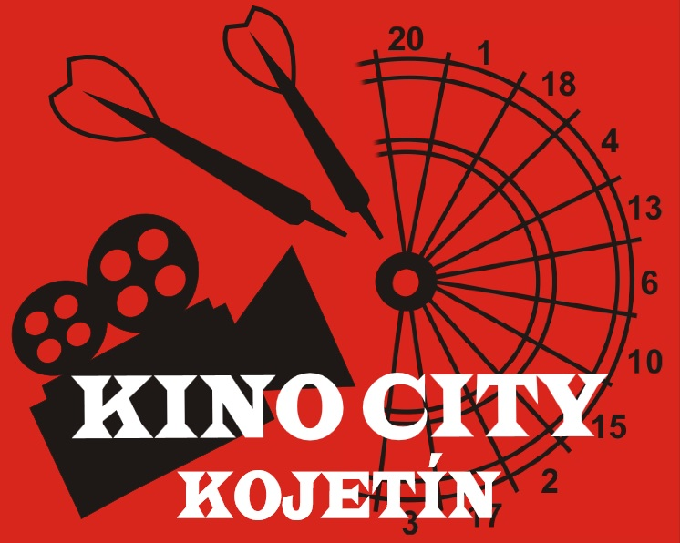
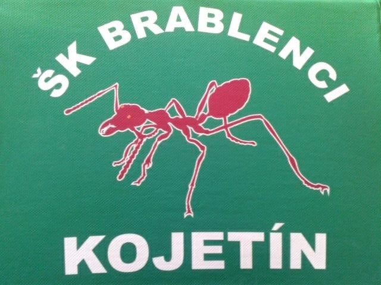

Rozlosování
| 1.kolo, 11. 9. 2021, 15:00 | |||||||||||||||||||||||||
| | Hra | | Legy | | |||||||||||||||||||||
| DC Kraken Dřínov | : | Sportbar Baďa B | 9:8 | 19:22 | |||||||||||||||||||||
| Dohrávka 27. 11. 2021 | Draci "A" | : | Kino City | 2:14 | 10:29 | ||||||||||||||||||||
| Dohrávka 2. 10. 2021 | Holubáři | : | Draci "B" | 12:4 | 26:13 | ||||||||||||||||||||
| Dohrávka 6. 11. 2021 | Sportbar Baďa A | : | Š Vepři K | 4:12 | 10:27 | ||||||||||||||||||||
| Bochořský Koblihy | : | ŠK Brablenci Kojetín | 13:3 | 28:9 |
________________________________________________________________________________________
| 2.kolo, 18. 9. 2021, 15:00 | |||||||||||||||||||||||||
| | Hra | | Legy | | |||||||||||||||||||||
| Š Vepři K | : | Bochořský Koblihy | 12:4 | 25:13 | |||||||||||||||||||||
| ŠK Brablenci Kojetín | : | DC Kraken Dřínov | 4:12 | 12:26 | |||||||||||||||||||||
| Kino City | : | Sportbar Baďa A | 11:5 | 24:15 | |||||||||||||||||||||
| Dohrávka 27. 11. 2021 | Sportbar Baďa B | : | Draci "B" | 12:4 | 25:11 | ||||||||||||||||||||
| Draci "A" | : | Holubáři | 9:7 | 21:16 |
________________________________________________________________________________________
| 3.kolo, 25. 9. 2021, 15:00 | |||||||||||||||||||||||||
| | Hra | | Legy | | |||||||||||||||||||||
| DC Kraken Dřínov | : | Š Vepři K | 5:11 | 13:24 | |||||||||||||||||||||
| Bochořský Koblihy | : | Kino City | 6:10 | 14:23 | |||||||||||||||||||||
| Draci "B" | : | ŠK Brablenci Kojetín | 10:6 | 22:18 | |||||||||||||||||||||
| Sportbar Baďa A | : | Draci "A" | 16:0 | 32:7 | |||||||||||||||||||||
| Holubáři | : | Sportbar Baďa B | 6:10 | 16:21 |
________________________________________________________________________________________
| 4.kolo, 9. 10. 2021, 15:00 | |||||||||||||||||||||||||
| | Hra | | Legy | | |||||||||||||||||||||
| Kino City | : | DC Kraken Dřínov | 11:5 | 25:11 | |||||||||||||||||||||
| Š Vepři K | : | Draci "B" | 13:3 | 27:10 | |||||||||||||||||||||
| Draci "A" | : | Bochořský Koblihy | 4:12 | 11:25 | |||||||||||||||||||||
| Dohrávka 6. 11. 2021 | ŠK Brablenci Kojetín | : | Sportbar Baďa B | 2:14 | 9:30 | ||||||||||||||||||||
| Sportbar Baďa A | : | Holubáři | 9:7 | 19:18 |
________________________________________________________________________________________
| 5.kolo, 16. 10. 2021, 15:00 | |||||||||||||||||||||||||
| | Hra | | Legy | | |||||||||||||||||||||
| Draci "B" | : | Kino City | 5:11 | 15:25 | |||||||||||||||||||||
| DC Kraken Dřínov | : | Draci "A" | 9:7 | 23:16 | |||||||||||||||||||||
| Sportbar Baďa B | : | Š Vepři K | 3:13 | 11:29 | |||||||||||||||||||||
| Bochořský Koblihy | : | Sportbar Baďa A | 8:9 | 21:23 | |||||||||||||||||||||
| Dohrávka 23. 10. 2021 | Holubáři | : | ŠK Brablenci Kojetín | 11:5 | 23:16 |
________________________________________________________________________________________
| 6.kolo, 30. 10. 2021, 15:00 | |||||||||||||||||||||||||
| | Hra | | Legy | | |||||||||||||||||||||
| Draci "A" | : | Draci "B" | 9:8 | 21:18 | |||||||||||||||||||||
| Kino City | : | Sportbar Baďa B | 9:7 | 21:20 | |||||||||||||||||||||
| Sportbar Baďa A | : | DC Kraken Dřínov | 7:9 | 16:19 | |||||||||||||||||||||
| Dohrávka 18. 2. 2022 | Š Vepři K | : | ŠK Brablenci Kojetín | 16:0 | 32:10 | ||||||||||||||||||||
| Bochořský Koblihy | : | Holubáři | 12:4 | 27:9 |
________________________________________________________________________________________
| 7.kolo, 13. 11. 2021, 15:00 | |||||||||||||||||||||||||
| | Hra | | Legy | | |||||||||||||||||||||
| Sportbar Baďa B | : | Draci "A" | 13:3 | 27:9 | |||||||||||||||||||||
| Předehrávka 23. 10. 2021 | Draci "B" | : | Sportbar Baďa A | 8:9 | 20:23 | ||||||||||||||||||||
| Dohrávka 28. 1. 2022 | ŠK Brablenci Kojetín | : | Kino City | 4:12 | 10:25 | ||||||||||||||||||||
| DC Kraken Dřínov | : | Bochořský Koblihy | 7:9 | 15:20 | |||||||||||||||||||||
| Dohrávka 7. 1. 2022 | Š Vepři K | : | Holubáři | 15:1 | 30:5 |
________________________________________________________________________________________
| 8.kolo, 20. 11. 2021, 15:00 | |||||||||||||||||||||||||
| | Hra | | Legy | | |||||||||||||||||||||
| Sportbar Baďa A | : | Sportbar Baďa B | 2:14 | 8:29 | |||||||||||||||||||||
| Dohrávka 21. 1. 2022 | Draci "A" | : | ŠK Brablenci Kojetín | 5:11 | 13:26 | ||||||||||||||||||||
| Bochořský Koblihy | : | Draci "B" | 12:4 | 26:14 | |||||||||||||||||||||
| Dohrávka 15. 1. 2022 | Kino City | : | Š Vepři K | 6:10 | 13:22 | ||||||||||||||||||||
| DC Kraken Dřínov | : | Holubáři | 13:3 | 26:9 |
________________________________________________________________________________________
| 9.kolo, 4. 12. 2021, 15:00 | |||||||||||||||||||||||||
| | Hra | | Legy | | |||||||||||||||||||||
| Dohrávka 20. 3. 2022 | Holubáři | : | Kino City | 4:12 | 14:26 | ||||||||||||||||||||
| Draci "B" | : | DC Kraken Dřínov | 3:13 | 12:27 | |||||||||||||||||||||
| Předehrávka 20. 11. 2021 | Š Vepři K | : | Draci "A" | 16:0 | 32:3 | ||||||||||||||||||||
| Sportbar Baďa B | : | Bochořský Koblihy | 6:10 | 17:23 | |||||||||||||||||||||
| Dohrávka 29.1.2022 | ŠK Brablenci Kojetín | : | Sportbar Baďa A | 7:9 | 15:23 |
________________________________________________________________________________________
________________________________________________________________________________________
| 10.kolo, 11. 12. 2021, 15:00 | |||||||||||||||||||||||||
| | Hra | | Legy | | |||||||||||||||||||||
| Sportbar Baďa B | : | DC Kraken Dřínov | 10:6 | 21:18 | |||||||||||||||||||||
| Dohrávka 18. 12. 2021 | Kino City | : | Draci "A" | 14:2 | 28:9 | ||||||||||||||||||||
| Draci "B" | : | Holubáři | 2:14 | 10:30 | |||||||||||||||||||||
| Š Vepři K | : | Sportbar Baďa A | 8:9 | 20:21 | |||||||||||||||||||||
| ŠK Brablenci Kojetín | : | Bochořský Koblihy | 6:10 | 12:24 |
________________________________________________________________________________________
| 11.kolo, 8. 1. 2022, 15:00 | |||||||||||||||||||||||||
| | Hra | | Legy | | |||||||||||||||||||||
| Bochořský Koblihy | : | Š Vepři K | 7:9 | 19:23 | |||||||||||||||||||||
| DC Kraken Dřínov | : | ŠK Brablenci Kojetín | 12:4 | 26:13 | |||||||||||||||||||||
| Sportbar Baďa A | : | Kino City | 7:9 | 19:21 | |||||||||||||||||||||
| Draci "B" | : | Sportbar Baďa B | 4:12 | 12:26 | |||||||||||||||||||||
| Holubáři | : | Draci "A" | 7:9 | 16:22 |
________________________________________________________________________________________
| 12.kolo, 22. 1. 2022, 15:00 | |||||||||||||||||||||||||
| | Hra | | Legy | | |||||||||||||||||||||
| Dohrávka 28. 1. 2022 | Š Vepři K | : | DC Kraken Dřínov | 9:8 | 21:18 | ||||||||||||||||||||
| Kino City | : | Bochořský Koblihy | 9:7 | 24:18 | |||||||||||||||||||||
| ŠK Brablenci Kojetín | : | Draci "B" | 9:7 | 20:16 | |||||||||||||||||||||
| Draci "A" | : | Sportbar Baďa A | 3:13 | 14:28 | |||||||||||||||||||||
| Dohrávka 26.3.2022 | Sportbar Baďa B | : | Holubáři | 16:0 | 32:0 |
________________________________________________________________________________________
| 13.kolo, 5. 2. 2022, 15:00 | |||||||||||||||||||||||||
| | Hra | | Legy | | |||||||||||||||||||||
| DC Kraken Dřínov | : | Kino City | 6:10 | 17:24 | |||||||||||||||||||||
| Draci "B" | : | Š Vepři K | 5:11 | 15:25 | |||||||||||||||||||||
| Bochořský Koblihy | : | Draci "A" | 13:3 | 27:9 | |||||||||||||||||||||
| Sportbar Baďa B | : | ŠK Brablenci Kojetín | 11:5 | 24:14 | |||||||||||||||||||||
| Holubáři | : | Sportbar Baďa A | 3:13 | 12:28 |
________________________________________________________________________________________
| 14.kolo, 12. 2. 2022, 15:00 | |||||||||||||||||||||||||
| | Hra | | Legy | | |||||||||||||||||||||
| Kino City | : | Draci "B" | 13:3 | 28:8 | |||||||||||||||||||||
| Draci "A" | : | DC Kraken Dřínov | 6:10 | 14:22 | |||||||||||||||||||||
| Š Vepři K | : | Sportbar Baďa B | 7:9 | 17:22 | |||||||||||||||||||||
| Sportbar Baďa A | : | Bochořský Koblihy | 11:5 | 23:13 | |||||||||||||||||||||
| Dohrávka 11. 3. 2022 | ŠK Brablenci Kojetín | : | Holubáři | 16:0 | 32:0 |
________________________________________________________________________________________
| 15.kolo, 26. 2. 2022, 15:00 | |||||||||||||||||||||||||
| | Hra | | Legy | | |||||||||||||||||||||
| Draci "B" | : | Draci "A" | 7:9 | 19:22 | |||||||||||||||||||||
| Dohrávka 12. 3. 2022 | Sportbar Baďa B | : | Kino City | 7:9 | 20:22 | ||||||||||||||||||||
| DC Kraken Dřínov | : | Sportbar Baďa A | 5:11 | 12:26 | |||||||||||||||||||||
| ŠK Brablenci Kojetín | : | Š Vepři K | 7:9 | 17:21 | |||||||||||||||||||||
| Holubáři | : | Bochořský Koblihy | 4:12 | 10:27 |
________________________________________________________________________________________
| 16.kolo, 5. 3. 2022, 15:00 | |||||||||||||||||||||||||
| | Hra | | Legy | | |||||||||||||||||||||
| Draci "A" | : | Sportbar Baďa B | 6:10 | 16:25 | |||||||||||||||||||||
| Sportbar Baďa A | : | Draci "B" | 13:3 | 28:10 | |||||||||||||||||||||
| Dohrávka 15.3.2022 | Kino City | : | ŠK Brablenci Kojetín | 9:7 | 22:16 | ||||||||||||||||||||
| Bochořský Koblihy | : | DC Kraken Dřínov | 5:11 | 14:24 | |||||||||||||||||||||
| Holubáři | : | Š Vepři K | 4:12 | 12:25 |
________________________________________________________________________________________
| 17.kolo, 19. 3. 2022, 15:00 | |||||||||||||||||||||||||
| | Hra | | Legy | | |||||||||||||||||||||
| Sportbar Baďa B | : | Sportbar Baďa A | 9:7 | 21:17 | |||||||||||||||||||||
| ŠK Brablenci Kojetín | : | Draci "A" | 12:4 | 24:13 | |||||||||||||||||||||
| Draci "B" | : | Bochořský Koblihy | 9:8 | 20:19 | |||||||||||||||||||||
| Š Vepři K | : | Kino City | 10:6 | 23:15 | |||||||||||||||||||||
| Holubáři | : | DC Kraken Dřínov | 7:9 | 15:21 |
________________________________________________________________________________________
| 18.kolo, 26. 3. 2022, 15:00 | |||||||||||||||||||||||||
| | Hra | | Legy | | |||||||||||||||||||||
| Kino City | : | Holubáři | 10:6 | 22:14 | |||||||||||||||||||||
| DC Kraken Dřínov | : | Draci "B" | 12:4 | 27:13 | |||||||||||||||||||||
| Předehrávka 4. 12. 2021 | Draci "A" | : | Š Vepři K | 1:15 | 4:31 | ||||||||||||||||||||
| Bochořský Koblihy | : | Sportbar Baďa B | 1:15 | 6:30 | |||||||||||||||||||||
| Sportbar Baďa A | : | ŠK Brablenci Kojetín | 14:2 | 30:9 |
________________________________________________________________________________________
Ukončení LIGY 9. 4. 2022
Týmy na rok 2021 - 2022.
Bochořský Koblihy
Hrací místo týmu: Hostinec u Koblihů, Bochoř, Náves 38/2
1. Kapitán: Štefan Szabo (tel. 734 150 491)
2. Hráč: Miroslav Miklík
3. Hráč: Jaromír Horák
4. Hráč: Zdeněk Kozák
5. Hráč: Lukáš Rozkošný
6. Hráč: Jan Hollý
7. Hráč: Vladimír Macháček
8. Hráč: Libor Matula
9. Hráč: Honza Richter (Dopsáno 18. 8. 2021)
Kroměřížští Berani (Holubáři)
POZOR ZMĚNA
Hrací místo týmu: Hostinec u Klimešů, Osvoboditelů 273, Vážany, 767 01 Kroměříž
1. Kapitán: Jakub Krejčíř (tel. 734 148 398)
2. Hráč: Jan Kučera
3. Hráč: Patrik Kučera
4. Hráč: Dominik Šafář
5. Hráč: Bedřich Mokrý
6. Hráč: Pavel Benedikt (Dopsán 20. 10. 2021)
7. Hráč: Jiří Řiháček (Dopsán 17. 3. 2022)
Kino City

POZOR ZMĚNA
Hrací místo týmu: Hospůdka u Pedyho, Masarykovo nám. 11, Kojetín
1. Kapitán: René Pěnčík (tel. 724 526 261)
2. Hráč: Miloslav Trčka
3. Hráč: Jan Horák
4. Hráč: Petr Langr
5. Hráč: Vít Charvát st.
6. Hráč: Michal Zedníček
7. Hráč: Dušan Meduna
8. Hráč: Martin Lochman (Dopsán 15. 1. 2022)
Sportbar Baďa A
Hrací místo týmu: Sportbar Baďa Lobodice
1. Kapitán: Miroslav Věrný (tel. 720 200 420)
2. Hráč: Pavel Vybíralík
3. Hráč: Jiří Lasovský
4. Hráč: Jiří Csókás
5. Hráč: Milan Nakládal
6. Hráč: Alena Baselová
7. Hráč: Jaroslav Králík
8. Hráč: Stanislav Tomiga
9. Hráč: Jan Vrána (Dopsán 26. 10. 2021)
DC Kraken Dřínov
Hrací místo týmu: Obecní hospoda Dřínov č.22
1. Kapitán: Ivo Hošek (tel. 775 570 512)
2. Hráč: Ladislav Kučírek
3. Hráč: Roman Judas
4. Hráč: Radek Vančura
5. Hráč: Martin Štěpánek
6. Hráč: Miloslav Hála
7. Hráč: Luďa Urban
8. Hráč: Jakub Zahradník
9. Hráč: Josef Navrátil
10. Hráč: Martin Ševčík
Draci "A"
Hrací místo týmu: Počenice Bar, Počenice č.183
1. Kapitán: Šárka Králiková (tel. 603 702 674)
2. Hráč: Lukáš Navrátil
3. Hráč: Marcel Tichánek
4. Hráč: Jan Gröpl
5. Hráč: Libor Králík
6. Hráč: Jaroslav Králík
Sportbar Baďa B
Hrací místo týmu: Sportbar Baďa Lobodice
1. Kapitán: Josef Malík (tel. 723 859 039)
2. Hráč: Lubomír Koudelka
3. Hráč: David Gregovský
4. Hráč: Michal Kapoun
5. Hráč: Jan Teplý
6. Hráč: Laďa Kožurko
7. Hráč: Lucie Budilová (Dopsáno 5. 10. 2020)
Š Vepři K
Hrací místo týmu: Hospůdka u Davida, Olomoucká č.365, Kojetín
1. Kapitán: Lukáš Telička (tel. 732 218 319)
2. Hráč: Jaroslav Korec
3. Hráč: Martin Novotný
4. Hráč: Josef Ďurian
5. Hráč: Miroslav Vrba (Dopsán 10. 8. 2021)
6. Hráč: Zdaněk Pluhař (Přestup k ŠK Brablenci Kojetín - 6. 1. 2022)
7. Hráč: David Konečný (Přestup k ŠK Brablenci Kojetín - 6. 1. 2022)
Draci "B"

Hrací místo týmu: Počenice Bar, Počenice č.183
1. Kapitán: Ariana Čechová (tel. 604 763 475)
2. Hráč: David Kovačič
3. Hráč: Miroslav Bureš
4. Hráč: Pavel Daněk
5. Hráč: Pavel Čech
6. Hráč: Jakub Novák (Dopsáno 19. 1. 2022)
ŠK Brablenci Kojetín

Hrací místo týmu: Moštárna, Podvalí 1308, Kojetín
1. Kapitán: René Večerka (tel. 731 858 610)
2. Hráč: Zbyněk Prokeš
3. Hráč: Roman Labounek
4. Hráč: Michal Bosák
5. Hráč: Tomáš Lasovsky
6. Hráč: Helena Tesařová
7. Hráč: Zdaněk Pluhař (Přestup od Š Vepři K - 6. 1. 2022)
8. Hráč: David Konečný (Přestup od Š Vepři K - 6. 1. 2022)
Týmy na rok 2021 - 2022.
Hrací místo týmu: Hostinec u Koblihů, Bochoř, Náves 38/2
|
Kroměřížští Berani (Holubáři)
POZOR ZMĚNA
|
Kino City
|
 |
POZOR ZMĚNA
|
Sportbar Baďa A
Hrací místo týmu: Sportbar Baďa Lobodice
|
DC Kraken Dřínov
Hrací místo týmu: Obecní hospoda Dřínov č.22
|
Draci "A"
Hrací místo týmu: Počenice Bar, Počenice č.183
|
Sportbar Baďa B
Hrací místo týmu: Sportbar Baďa Lobodice
|
Š Vepři K
Hrací místo týmu: Hospůdka u Davida, Olomoucká č.365, Kojetín
|
Draci "B"
|
|
Hrací místo týmu: Počenice Bar, Počenice č.183
|
ŠK Brablenci Kojetín
|
 |
Hrací místo týmu: Moštárna, Podvalí 1308, Kojetín
|